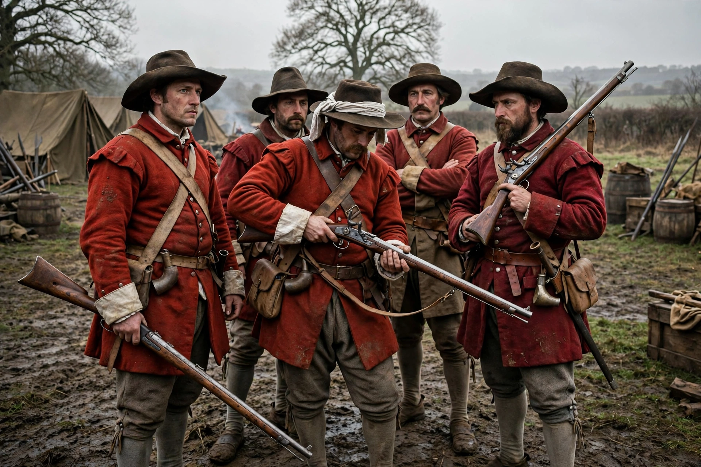

The New Model Army was a standing army formed in 1645 by the Parliamentarians during the English Civil War, and disbanded in 1660 after the Restoration. It differed from other armies of the period in that its members were liable for service anywhere in the country, rather than being limited to a single area or garrison, and its officers were chosen for ability rather than social rank.

After Parliament's forces performed disappointingly in 1644, the Self-denying Ordinance was passed, removing many aristocratic commanders. The New Model Army was commanded by Sir Thomas Fairfax, with Oliver Cromwell as lieutenant general of horse. Its soldiers were issued red coats, a practice that later gave British soldiers the nickname 'redcoats'.
The army decisively defeated Charles I at the Battle of Naseby in June 1645, effectively ending the First Civil War. During the Wars of the Three Kingdoms it defeated the Scots at Preston, Dunbar and Worcester, and campaigned in Ireland.
The army became politically radicalised, producing the Levellers' Agreement of the People, debating it with Cromwell and Henry Ireton at the Putney Debates in 1647, and carrying out Pride's Purge of Parliament in 1648, which led to the trial and execution of Charles I.
After the Restoration in 1660, the army was disbanded, with arrears paid; some regiments were retained in royal service and became the origins of the modern British Army's standing regiments.